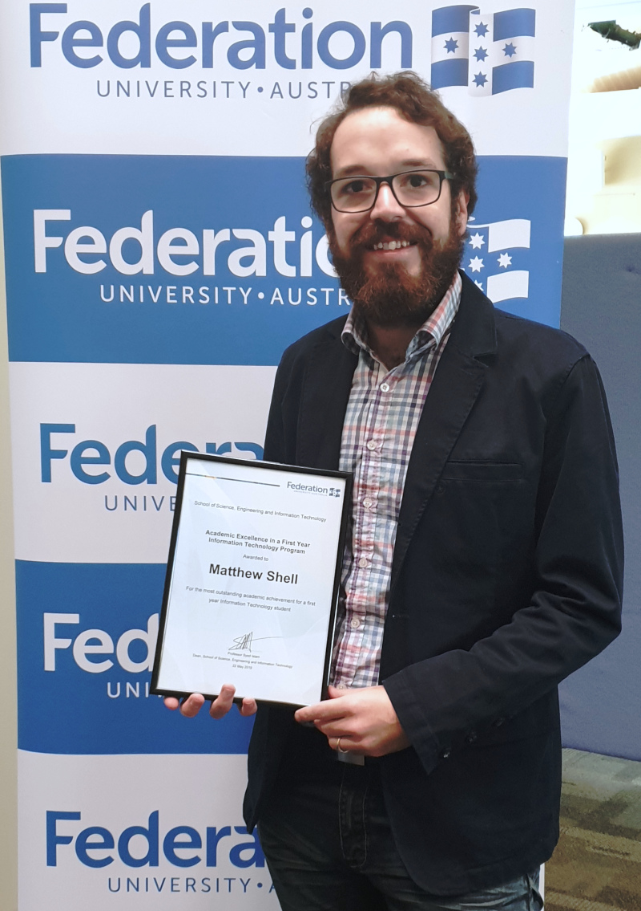

Studies
Bachelor of IT (Mobile App Development)

Halfway through a Bachelor of IT (Mobile App Development) with a GPA of 7.0.
Completed summer internship, work casually on Fed Uni
IT Service Desk and hold both
volunteer and
paid student leadership roles
Due to complete degree in 2020.
Awards and Recognition
- Academic Excellence in 1st year IT program (2018)
- Federation Award (2018)
- Clubs and Societies Award (2018)
- Chosen for New Colombo Plan, completed unit of study in China (2018)
- Completed internship through Summer Tech Live program (2019)
Other Studies and Qualifications
- Completed 8 units of Bach. of Science/Bach. of Education at Monash University (2007)
- Completed 12 units of Bach. of Applied Science (Mathematics) at RMIT (2010-2012)
- Obtained RG-146 (general financial advice) qualification through Kaplan Professional (2013)